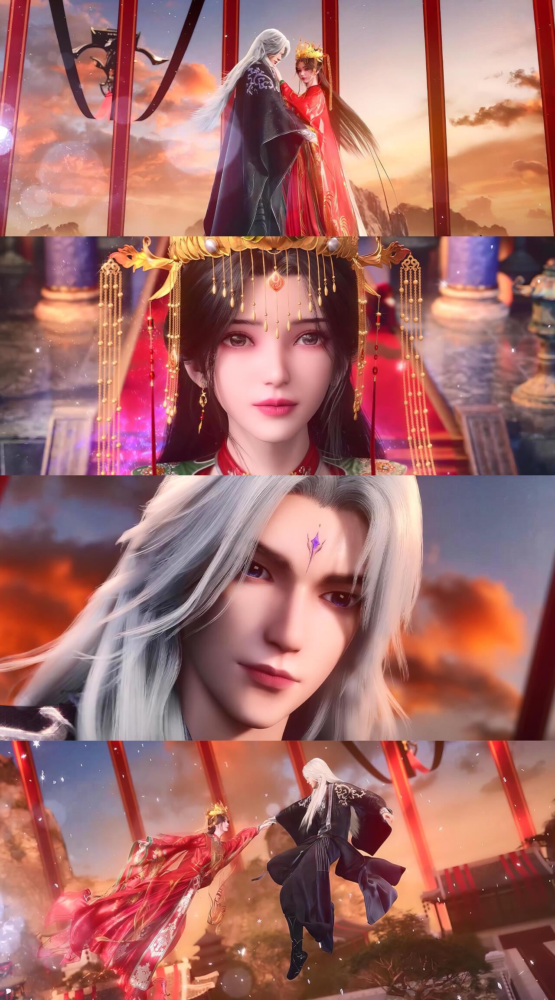
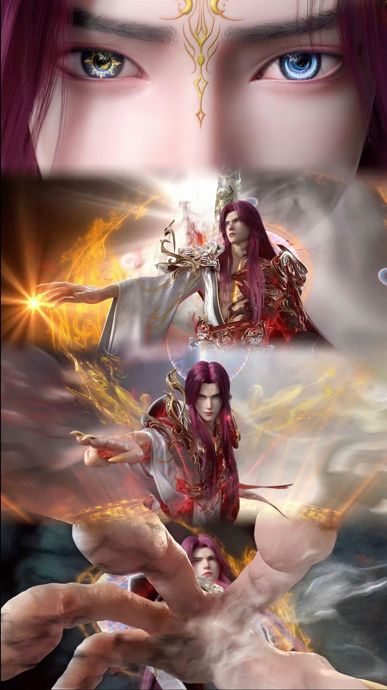

Immortal Reversal
Introduction
Immortal Reversal Li Muwan
Li Muwan is an important female character in "Xian Ni". She appears in the later part of the story and is one of Wang Lin's friends and lovers. Li Muwan's background is closely related to Wang Lin, and her appearance promotes some changes in Wang Lin's path to immortality.
Wang Lin's clone
Wang Lin's clone is a very key setting in "Xian Ni". It not only reflects the profoundness of Wang Lin's cultivation, but also plays an important role in the plot. Wang Lin shows his great potential and wisdom in the world of cultivation through his clone.